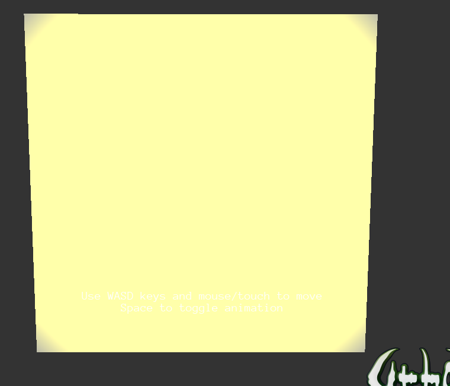

SteveU3D
Hi,
I need to create a tube lighting in my application like the one here
https://discourse.urho3d.io/t/solved-help-with-tube-lighting/2244
.
I found the xml code which creates it in PBRExample.xml :
<node id="232">
<attribute name="Is Enabled" value="true" />
<attribute name="Name" value="" />
<attribute name="Tags" />
<attribute name="Position" value="6.54564 5.87075 -16.0652" />
<attribute name="Rotation" value="1 0 0 0" />
<attribute name="Scale" value="0.648644 0.648644 0.648644" />
<attribute name="Variables" />
<component type="Light" id="251">
<attribute name="Brightness Multiplier" value="800" />
<attribute name="Use Physical Values" value="true" />
<attribute name="Radius" value="0.11" />
<attribute name="Length" value="6.53" />
<attribute name="Range" value="7.61" />
<attribute name="Spot FOV" value="62.08" />
<attribute name="Light Shape Texture" value="TextureCube;" />
<attribute name="Cast Shadows" value="true" />
</component>
</node>
I need to create it in C++. So I did :
//create a box to see the light
Node* boxNode = scene_->CreateChild("Box");
boxNode->SetScale(Vector3(10,10, 2));
boxNode->SetPosition(Vector3(0, 0, 5));
StaticModel* boxObject = boxNode->CreateComponent<StaticModel>();
boxObject->SetModel(cache->GetResource<Model>("Models/Box.mdl"));
boxObject->SetCastShadows(true);
//tube light
Node* lightNode = scene_->CreateChild("TubeLight");
Light* tubeLight = lightNode ->CreateComponent<Light>();
tubeLight ->SetBrightness(800);
tubeLight ->SetUsePhysicalValues(true);
tubeLight ->SetRadius(0.11f);
tubeLight ->SetLength(6.53f);
tubeLight ->SetRange(7.61f);
tubeLight ->SetFov(62.08f);
tubeLight ->SetColor(Color(1.0f, 0.0f, 0.0f, 1.f));
//what's the C++ equivalent for <attribute name="Light Shape Texture" value="TextureCube;" />
//there are the two following functions but I don't know which param to put
//tubeLight ->SetShapeTextureAttr(...);
//tubeLight ->SetShapeTexture(...)
lightNode ->SetCastShadows(true);
lightNode ->SetPosition(Vector3(0, 0, 3));
lightNode ->SetScale(Vector3(0.648644, 0.648644, 0.648644));
With that code, I get the following :

Thanks.